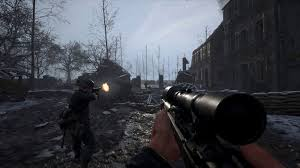
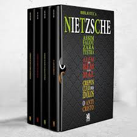

Quem sou eu?
Meu nome é João Pedro Fioravante
Tenho 18 anos
Curso Engenharia de Software no IFSP
Sou Natural de Cataduva-SP
O que eu gosto de fazer?
Eu gosto de Praticar esportes, como basquete, futebol, academia e etc
Outros hobbies meus são leitura(Livros de conhecimento, ou filosofia), e jogar(Especialmente HELL LET LOOSE)
 O que eu valorizo?
- Familia
- Relacionamentos
- Saúde
- Conhecimento
Qual são as minhas Competências e Formações
- Ensino Médio Técnico - IFSP
- fiz meu ensino médio integrado ao técnico em mecatrônica, momento enriquecedor para desenvolvimento pessoal e intelectual, pude ter ideias de carreiras que gostaria ou não seguir futuramente
- O técnico em mecatrônica me proporcionou uma vasta de gama de aprendizado, desde a produção básica, exemplo: manufatura, a automações industriais, exemplo: programação em CLP, Microcontroladores e a integração deles com o Hardware
- Ensino Superior - IFSP(Cursando)
- iniciei meus estudos em uma instituição de qualidade, desejo usufruir de sua máxima infraestrutura tanto para meu desenvolvimento quanto para meu networking